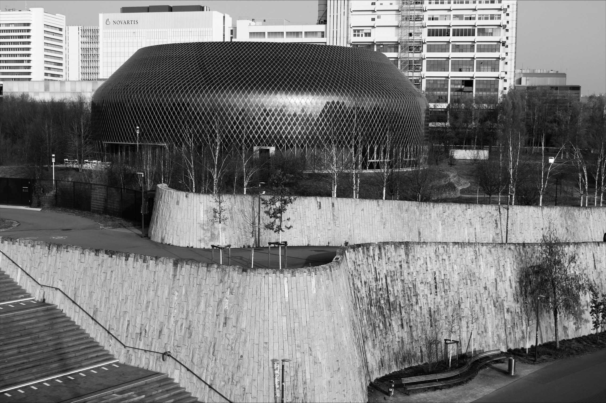

Nutzung
Auf dem Novartis Campus wurde im Frühling 2022 der Neubau des Novartis Campus eröffnet [29]. Es ist ein öffentlich zugänglicher Ausstellungs-, Begegnungs- und Veranstaltungsort in Basel. Er dient als Ort des Lernens, des Wissens und des Austauschs. Das Herzstück des Pavillons ist die multimediale Ausstellung «Wonders of Medicine» im Obergeschoss. Sie zeigt der Bevölkerung Einblicke in die Welt der pharmazeutischen Wissenschaft und zeigt, wie Medikamente entstehen und welche Rolle die Forschung für die Gesundheit der Menschen spielt.
Die Ausstellung ist in vier Teilbereiche aufgeteilt: «Verletzlichkeit des Lebens», «Vom Labor zum Patienten», «Schritte durch die Zeit» und «Zukunft des Gesundheitswesens». Diese Themen haben das Ziel, die Besucherinnen und Besucher dazu anzuregen, über den menschlichen Körpers, Gesundheit sowie Chancen und Herausforderungen im Gesundheitswesen nachzudenken. Die Inhalte sind in drei Sprachen verfügbar: Deutsch, Englisch und Französisch. Neben der Ausstellung gibt es auch weitere Nutzungsmöglichkeiten. Im Erdgeschoss befinden sich ein Café, ein Veranstaltungsraum sowie der SchoolHub. Der SchoolHub ist ein interaktives Angebot für Schulklassen. Zudem gibt es auch einen kleinen Filmsaal im Mezzanine, der den Einstieg in den Ausstellungsrundgang bildet [30].

Nachhaltigkeit
Der Bezug zur Nachhaltigkeit wird im Novartis Campus in vielerlei Hinsicht sichtbar, denn dieser Pavillon vereint Wissenschaft und Nachhaltigkeit in einem Gebäude [31]. Novartis hat sich konkrete Ziele gesetzt, um Klima, Ressourcen und Energieverbrauch sowohl im eigenen Unternehmen als auch bei seinen Lieferanten zu verbessern. Das Unternehmen möchte mit seinen eigenen Aktivitäten bis 2025 kohlenstoffneutral sowie bis 2030 plastik- und wasserneutral sein. Bis 2030 soll zudem auch die gesamte Lieferkette von Novartis CO2-neutral sein, und bis 2040 soll das Netto-Null-Ziel erreicht werden [32].
Dies sind zwar die allgemeinen Ziele von Novartis, allerdings zeigen sich diese auch im Gebäude selbst. Die Medienfassade des Pavillons wird nämlich durch Photovoltaikzellen mit Solarstrom betrieben. Diese sogenannte Nullenergie-Medienfassade erzeugt Energie und versorgt gleichzeitig auch die LED-Beleuchtung der Fassade [30]. Novartis hat bereits einen grossen Beitrag zu erneuerbarer Energie geleistet, denn die Gebäude werden durch Fernwärme geheizt. Diese Fernwärme wird wiederum aus Abfall und Holz erzeugt [32].
Neben der ökologischen Nachhaltigkeit fördert der Novartis Pavillon auch die soziale Nachhaltigkeit. Der Pavillon unterstützt den Austausch zwischen Wissenschaft und Gesellschaft. Nachhaltigkeit spielt jedoch nicht nur eine soziale oder ökologische Rolle, sondern auch eine wirtschaftliche. Novartis investiert in energieeffiziente Gebäude und nachhaltige Technologien. Dadurch können langfristig Ressourcen eingespart und gleichzeitig die Umwelt geschützt werden, damit auch zukünftige Generationen von der Erde profitieren können.
„Ein echter Meilenstein, wenn es um Medienfassaden geht. Und vor allem Null-Energie-Medienfassaden!“ Zitat von Valentin Spiess, dem Gründer und Verwaltungsratspräsidenten von iart [29].
Architektonische Bedeutung
Der Novartis Pavillon wurde vom italienischen Designer und Architekten Michele De Lucchi entworfen [33]. Der Novartis Pavillon ist als Holz-Beton-Hybridbau gebaut worden und ist zugleich das erste öffentlich zugängliche Gebäude des Pharmakonzerns Novartis.
Eine Besonderheit des Gebäudes liegt im ressourcenschonenden Einsatz von Materialien wie Holz, Stahl und Beton. Neben dieser konstruktiven Besonderheit zeichnet sich der Pavillon jedoch vor allem durch seine besondere Fassadengestaltung aus. Besonders bei Einbruch der Dunkelheit entfaltet das Gebäude seine volle Wirkung. Die künstlerisch gestalteten Fassaden verwandeln den Pavillon in eine Art Kunstwerk. Auf der Fassade werden digitale Kunstwerke von drei Künstlern gezeigt, wodurch ein Zusammenspiel von Architektur, Kunst und Technologie entsteht. Durch die Lichtinszenierungen wirkt die Gebäudehülle lebendig.
Diese Lichtinszenierungen sind möglich, da dieses Gebäude eine Nullenergie-Medienfassade hat. Sie besteht nämlich aus mehr als 10’000 rautenförmigen Photovoltaikmodulen, die auf organischen Kohlenwasserstoffverbindungen basieren und mit doppelseitigen LEDs ausgestattet sind. Insgesamt rund 30’000 einzeln steuerbare LEDs ermöglichen mithilfe einer Software komplexe Lichtinszenierungen. Durch die Reflexion an der dahinterliegenden Aluminium-Stehfalzfassade entstehen dynamische visuelle Effekte wie bewegte Schriftzüge oder animierte Lichtbilder. Ein zentraler architektonischer Aspekt ist dabei die Verbindung von Gestaltung und Energieeffizienz. Die semitransparenten Solarmodule sind jeweils zwischen zwei Polycarbonatplatten eingebettet und erzeugen somit selbst Energie mit einer Spitzenleistung von etwa 36 kW. Zwar wird der produzierte Strom in das Netzwerk eingespeist, doch die für die Medienfassade benötigte Energie bleibt in der Gesamtbilanz stets kleiner oder gleich der selbst erzeugten Menge [34].